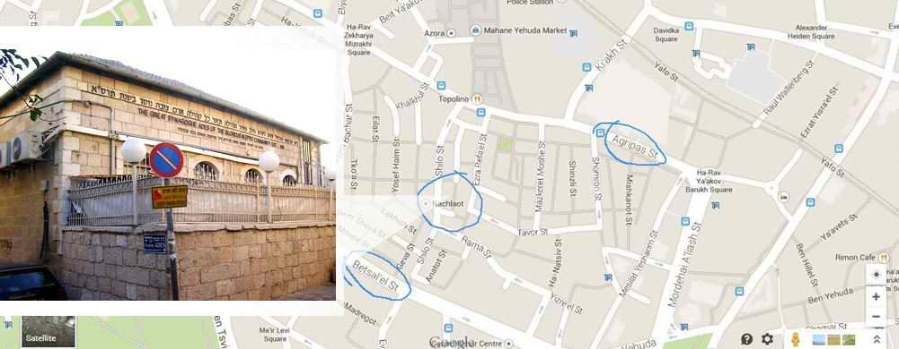
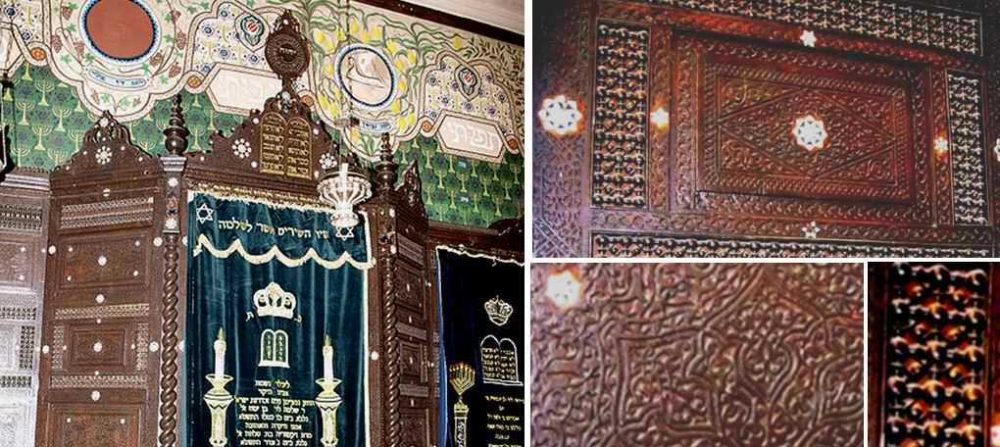

The Beginnings of Zionist Art. Part II
The beit knesset (Hebrew for "house of assembly", the same as "synagogue" in Greek) of the community of immigrants from Aleppo (Halabi Jews), in the Jerusalem neighbourhood of Nachlaot, was founded in 1901.

For the first part of this article, see here.

Built of Jerusalem stone, like most buildings in Israel's capital, it holds a place of honour and is considered one of the most beautiful synagogues in Jerusalem.
The synagogue's Aron ha-Kodesh (the ark for the Torah) was made in Damascus (Syria) of walnut wood and is entirely covered with intricate geometric carved ornament inlaid with mother-of-pearl and pearls.

Its respectable age of 113 years does not, however, entitle it to be called the oldest. Other Jerusalem synagogues are known to be older: the Eliyahu ha-Navi Synagogue (the Synagogue of Elijah the Prophet) of the 16th century, the Yohanan ben Zakkai Synagogue of the 17th century, and the Istanbuli Synagogue and the ha-Emtsai (Middle) Synagogue of the 18th century.
But the traditions of Syrian synagogue chant go back to deep antiquity, and they make it the centre of HAZANUT HALABI (the Aleppo cantorial tradition) in Israel.
Halab (Aramaic; Italian: Aleppo) is the largest city of Syria, with a population of over two million. For many centuries Aleppo was the largest city in Greater Syria.
Aleppo is one of the oldest continuously inhabited cities in the world. Excavations at Tell as-Sawda and Tell al-Ansari (today the south of the old city) point to settlement at least in the second half of the 3rd millennium BC.
From time immemorial there was a large Jewish community in Syria. In the first centuries of the Common Era, alongside the orthodox synagogues, there were many messianic and Christian communities there.
The Ades beit knesset attracts many visitors from Israel and abroad because of its unique Halabi liturgical style.
Ades is one of only two synagogues in Jerusalem (and perhaps in the world) that keep up the ancient tradition of SELICHOT and BAKASHOT (Hebrew: special supplications).
The style of prayer chant of the Aleppo Jews practised in the Ades Synagogue had a great influence on the development of the hazanut style known today as Yerushalmi-Sephardi.
Many cantors who are well known today came to this synagogue specially to learn and master Halabi HAZANUT.
Listen to Bakashot sung with musical instruments here.
***
There is one more thing that interested me in this synagogue: the surviving wall painting that covers all the walls of the house of prayer. It is 11 years younger than the building itself, but it is this painting, above all, that researchers regard as the beginning of Zionist art and the first monumental work of Zionist art. It is listed in the register of Israel's cultural heritage.
We will talk about it separately in the next part.
Author: Ephraim Kalish / Torah-Art
 Mark Antokolsky. Christ Before the People. Part I
Mark Antokolsky. Christ Before the People. Part I Mark Antokolsky. Christ Before the People. Part II
Mark Antokolsky. Christ Before the People. Part II